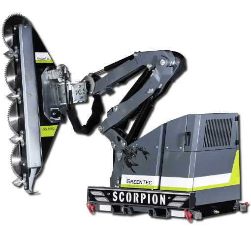
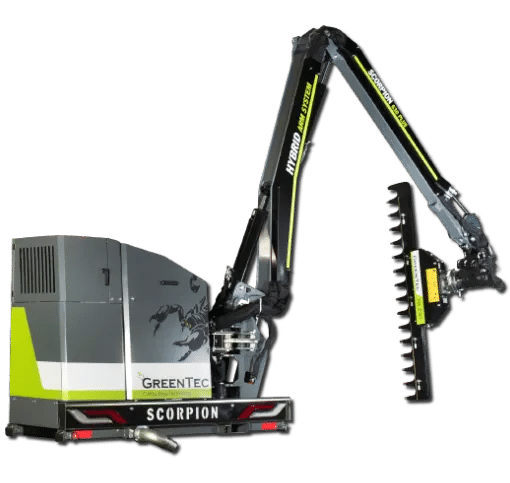
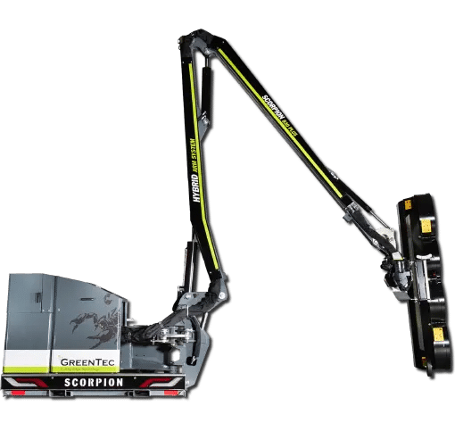
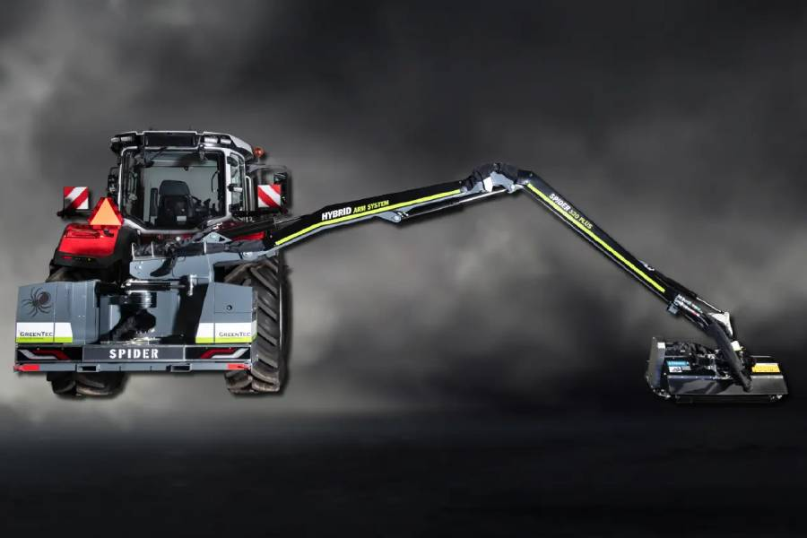
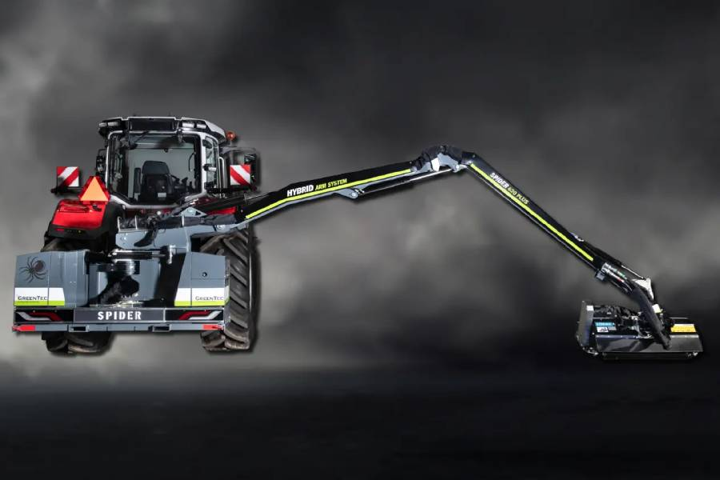
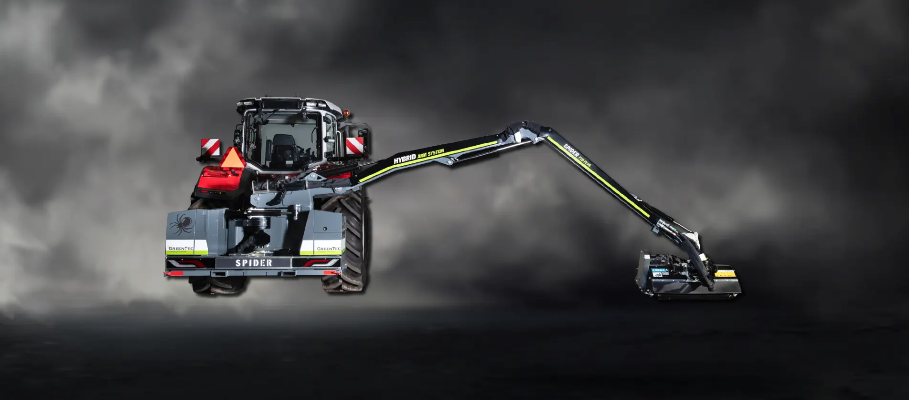
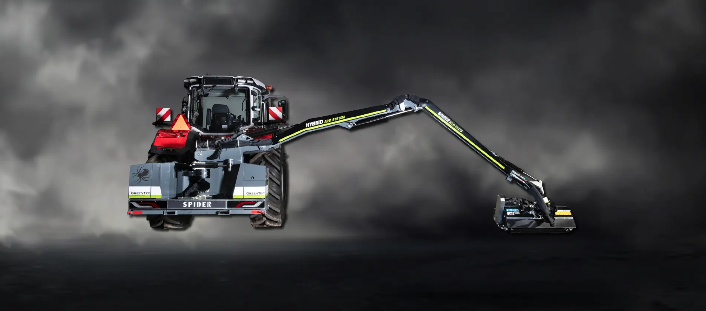

Reach & boom mowers
GreenTec Scorpion and Spider boom mowers for roadside maintenance, verge mowing, hedge cutting and tree trimming.
Compare the range ↓Compare GreenTec reach mowers and boom mowers for roadside maintenance, verge mowing, hedge cutting and tree trimming. The range includes compact Scorpion models, longer-reach Scorpion arms and the Spider series for work on both sides of the tractor.
Start with the reach you need, your carrier and the cutting attachment. Browse the models below, then ask DTE to confirm the mower, mounting and tool combination for your machine.
Browse GreenTec reach mowers

Greentec Scorpion 330-4 Plus Basic Reach Mower – Front Mounted
Compact boom mower for verge mowing and hedge trimming. This front-mounted Basic model is designed for loaders weighing at least 2,250 kg.
View detailGreentec Scorpion 330-4 Plus Reach Mower – Front Mounted
Compact front-mounted boom mower for restricted spaces and hedgerow maintenance, designed for small tractors weighing at least 1,650 kg.
View detailGreentec Scorpion 430-4 Plus Basic Reach Mower – Front Mounted
Compact boom mower for verge mowing and hedge trimming. This front-mounted Basic model is designed for loaders weighing at least 3,000 kg.
View detailGreentec Scorpion 430-4 Plus Reach Mower – Front Mounted
Front-mounted boom mower for restricted spaces, roadside vegetation and hedgerows, designed for small tractors weighing at least 2,200 kg.
View detail
Greentec Scorpion 530-6 Plus Reach Mower – Rear Mounted
Rear-mounted boom mower for roadside maintenance, verge mowing and tree trimming. Minimum tractor weight: 4,000 kg.
View detailGreentec Scorpion 630-6 Plus Reach Mower – Rear Mounted
Rear-mounted boom mower for roadside maintenance, verge mowing and hedge cutting. Minimum tractor weight: 5,000 kg.
View detail
Greentec Scorpion 730-8 Plus Reach Mower – Rear Mounted
Rear-mounted boom mower for roadside maintenance, hedge cutting and tree trimming. Minimum tractor weight: 7,000 kg.
View detailGreentec Scorpion 830-8 Plus Reach Mower – Rear Mounted
Rear-mounted boom mower for roadside maintenance, hedge cutting and tree trimming. Minimum tractor weight: 8,000 kg.
View detail
Greentec Spider 520 PLUS Reach Mower
Dual-side reach mower with the cutting tool able to move forward into the operator’s view. Minimum tractor weight: 5,000 kg.
View detail
Greentec Spider 620 PLUS Reach Mower
Dual-side reach mower for roadside maintenance, hedge cutting and tree trimming. Minimum tractor weight: 6,000 kg.
View detail
Greentec Spider 720 PLUS Reach Mower
Dual-side reach mower for verge mowing, hedge cutting and tree trimming. Minimum tractor weight: 7,000 kg.
View detail
Greentec Spider 820 PLUS Reach Mower
Rear-mounted, dual-side reach mower for roadside maintenance, hedge cutting and tree trimming. Minimum tractor weight: 8,000 kg.
View detailNo matching models
Try another model name or keyword.
Which reach mower suits your work?
Compare three main groups in the GreenTec range, then check the individual model and mounting specifications.
Swipe to compare all columns.
| Range | Horizontal reach | Applications and configuration |
|---|---|---|
| Scorpion 4 Series | 3.3–4.3 m | Compact models for restricted spaces, bike paths, parks and hedgerow maintenance. Tractor and loader mounting options vary by model. |
| Scorpion 6 & 8 Series | Up to 8.3 m | Longer-reach models for roadside work, embankments and large properties. Select the arm and cutting tool to suit the job. |
| Spider PLUS Series | 5.2–8.2 m | Dual-side operation with the cutting head able to move forward into the operator’s field of view. Mounting depends on model. |
Reach figures describe the arm range; carrier weight, mounting and tool suitability must be checked for the exact model. Read DTE’s reach mower range guide.
Frequently asked questions
Are reach mowers and boom mowers the same type of equipment?
The Spider and Scorpion machines are described as reach mowers and boom mowers. Their arms carry interchangeable tools for work such as grass mowing, hedge cutting and tree trimming. Compare the arm, mounting arrangement and cutting tool together.
Which model can work on both sides of the tractor?
The Spider series can position the arm on either side of the tractor and bring the cutting head forward. The range covers Spider 520, 620, 720 and 820 PLUS models; check the mounting configuration on the selected product page.
Can I use a flail mower or a tree-trimming saw on the arm?
DTE’s range includes hydraulic flail mower heads and Quadsaw tree-trimming attachments. Compatibility depends on the arm, tool and carrier. Ask DTE to confirm the combination before ordering.
Guides and product information
- Compare the GreenTec reach mower ranges
Review the Scorpion and Spider ranges, their reach and mounting options.
- How the Spider works on both sides
See how the side-shift frame and arm movement position the cutting head around the tractor.
Match a reach mower to your carrier
Tell DTE your tractor or loader make and model, operating weight, required reach and the material you need to cut. Ask for a quote covering the selected arm, mounting arrangement and compatible cutting tool.